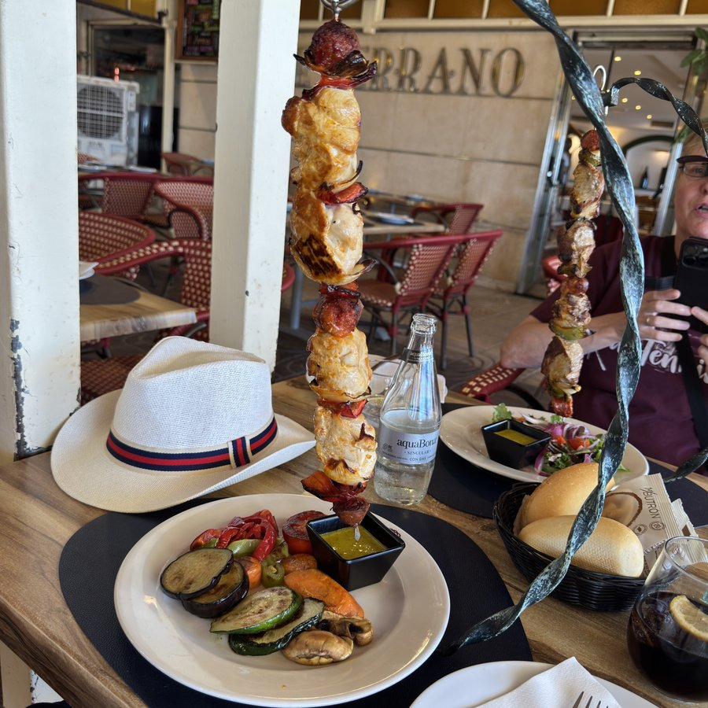
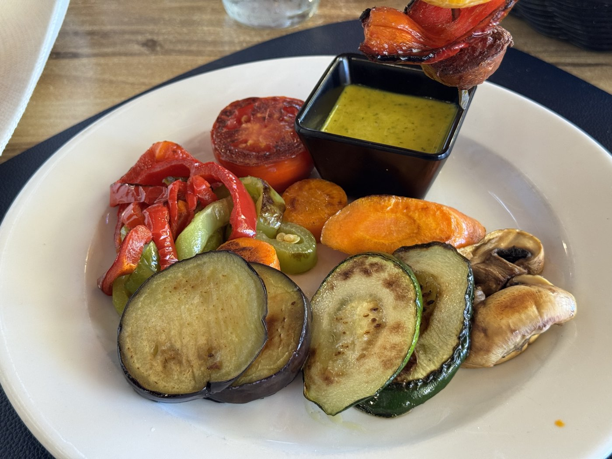
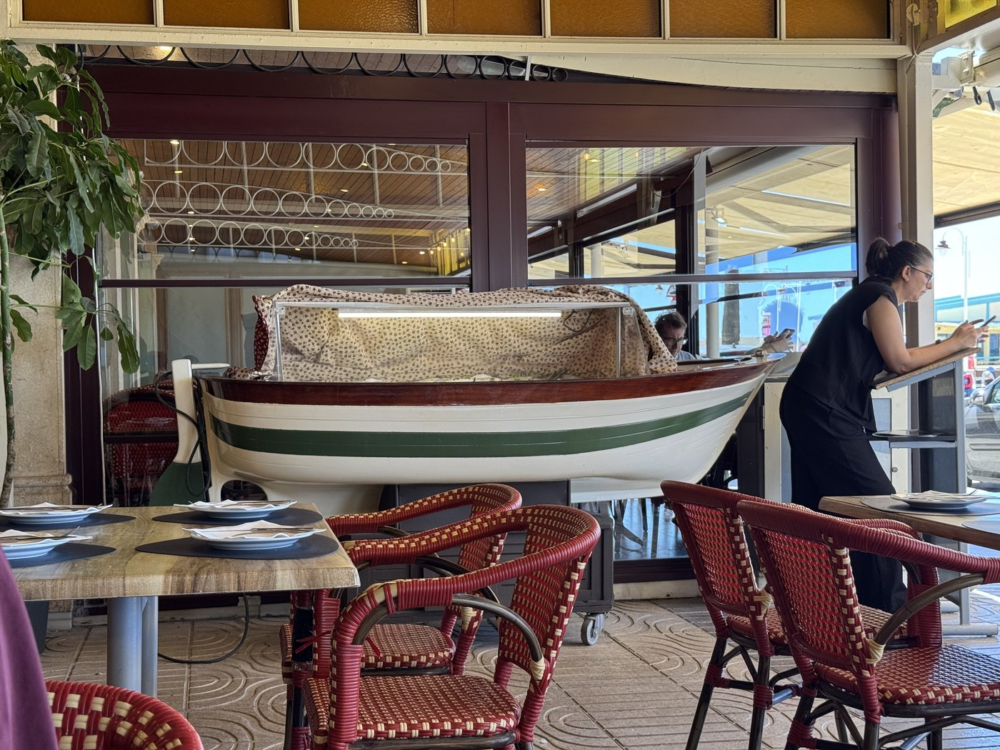
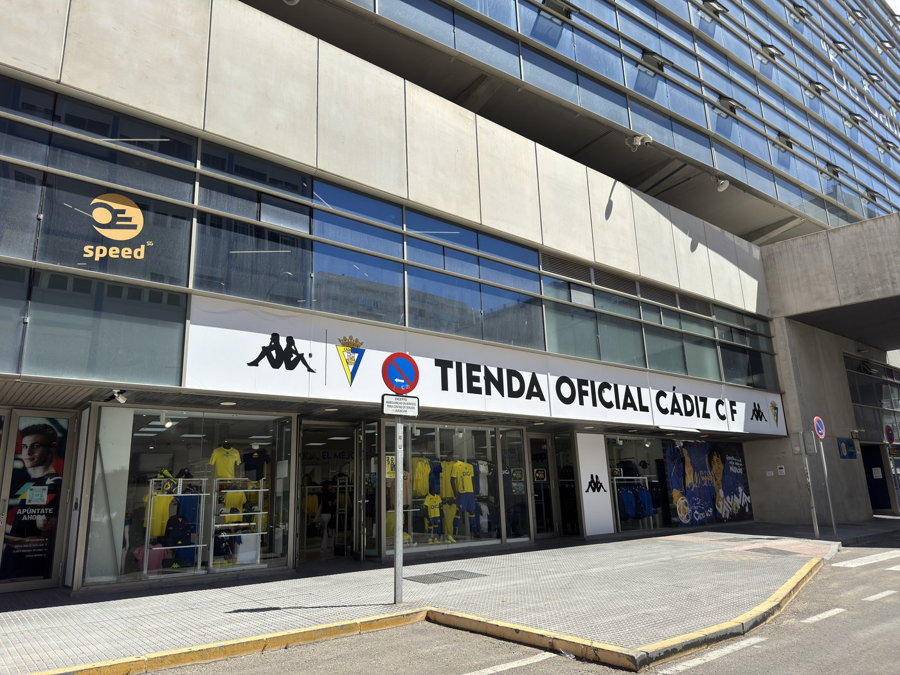
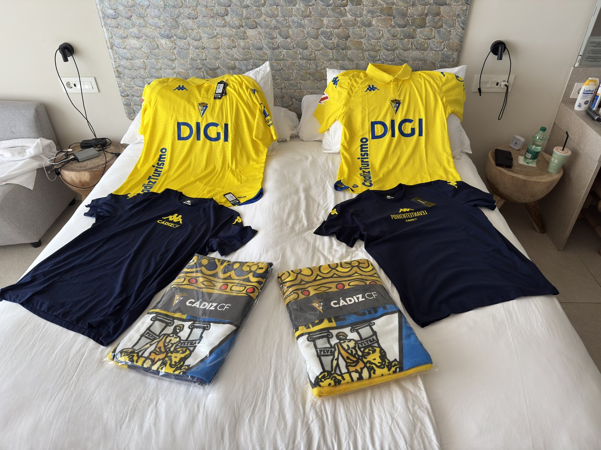
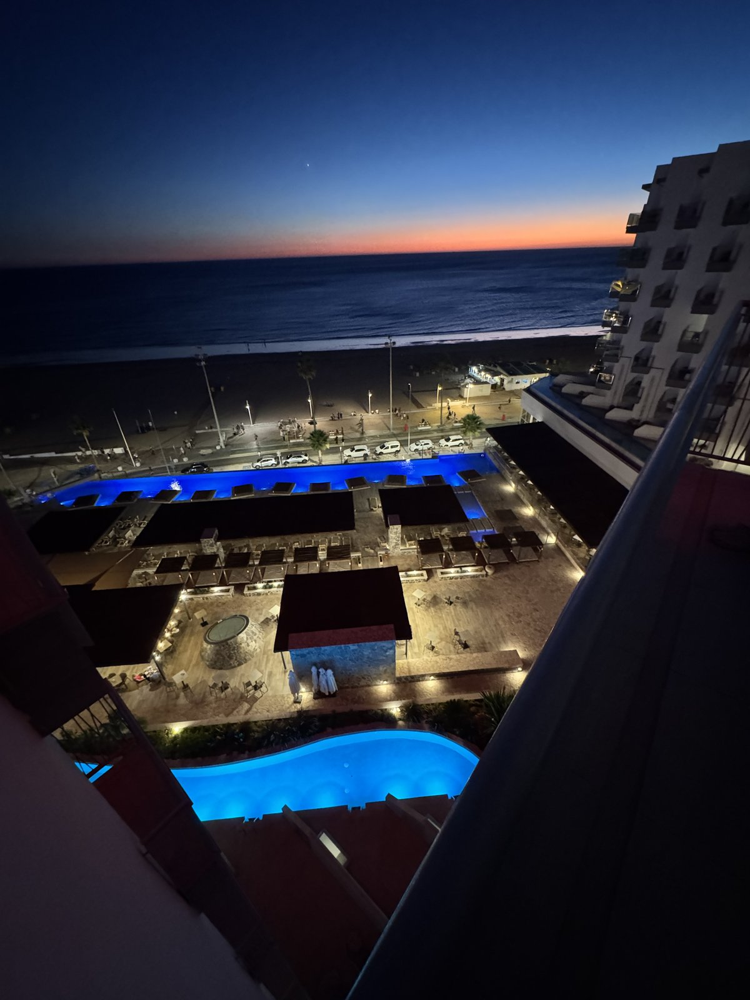

Heute nur ganz kurz, und das ist ausschließlich unserer exorbitanten Urlaubsfaulheit geschuldet: Wir waren wirklich nur essen.
Dafür sehr gut. Im Vorbeigehen hatten wir am Tag zuvor ein Lokal gesehen, das Brochetas colgantes serviert — hängende Fleischspieße. Sassi hat einen mit Ibérico bestellt, dem iberischen Edelschwein, ich einen mit Pollo.
Leider stand auf der Karte nur, daß es eine Beilage gibt. Nicht welche. Zum Glück hat mein Spanisch zum Nachfragen gereicht, denn der Standard wären Patatas con Salsa gewesen — Kartoffeln mit Soße. Das ist uns hier ohnehin aufgefallen: Kartoffeln werden in jeglicher Form gereicht, und zwar sehr oft.
Wir mögen die zwar auch gern, haben uns dann aber doch für die beiden Alternativen entschieden: Ensalada für Sassi, Verduras für mich. Die Portionen waren wieder reichlich und sehr lecker.

Wie sehr viele Restaurants hier bietet auch dieses eine große Auswahl an Fischgerichten — und die Auslage in dem kleinen Bötchen war echt knuffig.

Zum Abschluß haben wir uns dann noch einen Kaffee gegönnt.
Danach wurde es ganz bekloppt. Kaum fünf Minuten zu Fuß von unserem Hotel steht das Fußballstadion des Cádiz CF, der in der zweiten spanischen Liga spielt. Und da wir eh noch Souvenirs suchten, haben wir uns gedacht: warum nicht mal ein paar Memorabilia eines spanischen Fußballvereins?

Also haben wir unseren Verdauungsspaziergang dorthin gerichtet.

Abgeschlossen wurde das Ganze natürlich mit einem Erdbeermilchshake vom Mira. Und einen tollen Sonnenuntergang gab es auch.
